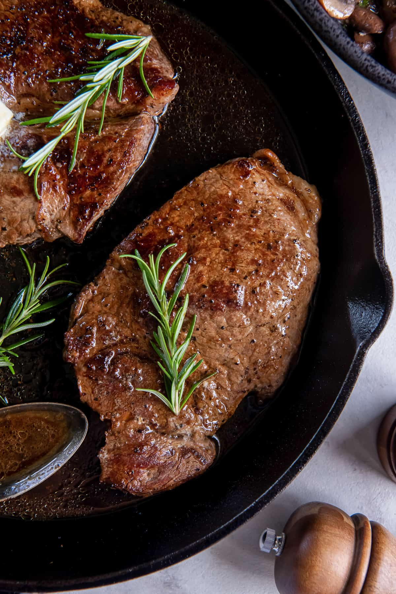

Nothing like a nice hunk of meat.

Description:
Just some nice cow meat, add heat till it browns and is delicious
Ingredients:
- The steak
- Salt n Peppa
- Butter or Olive Oil
Steps:
- Heat up your frying pan until the oil/butter starts to smoke a lil
- Put that hunk of meat on it
- Flip occasionally
- Feel for how well you want it done!